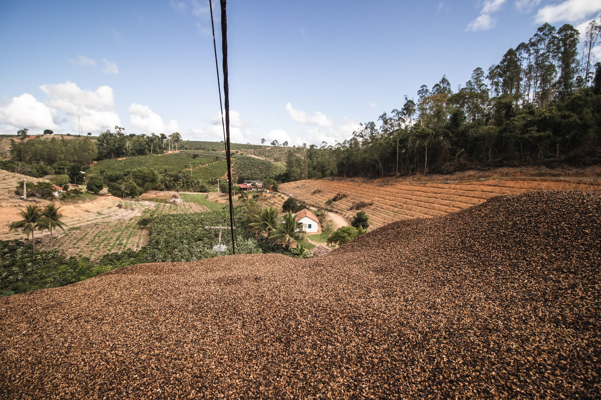
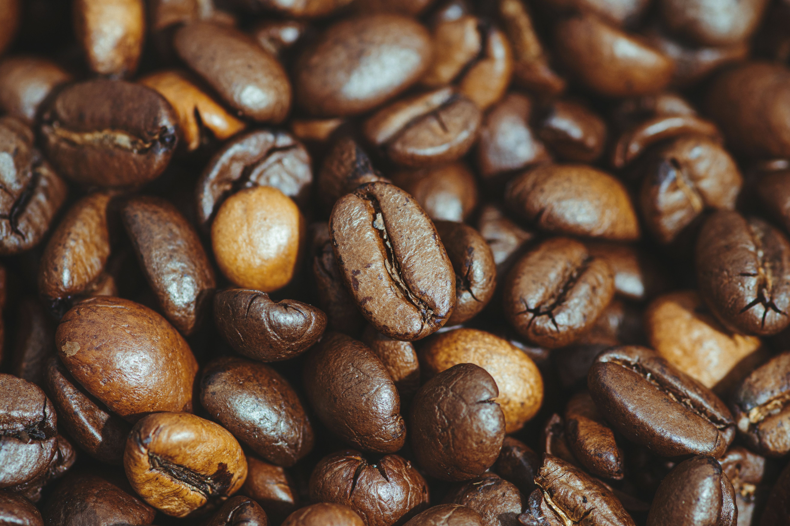
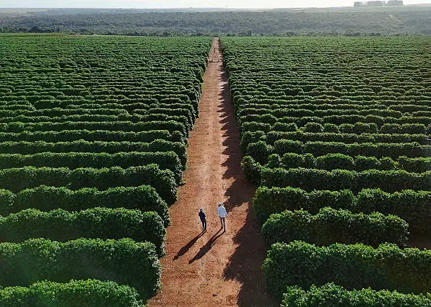
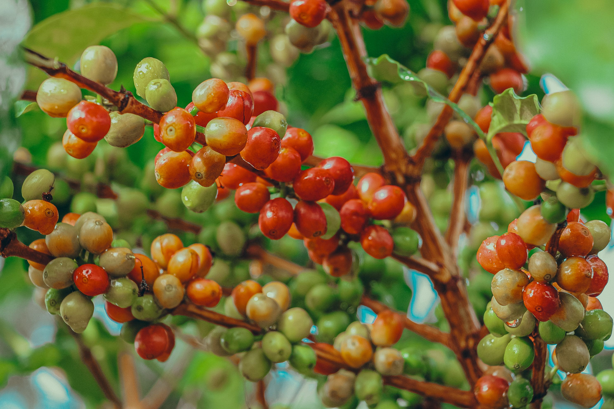

Reserva da Serra - Sul de Minas
Notas sensoriais de chocolate ao leite e avelã. Torra média clara com acidez cítrica agradável e corpo aveludado.


Notas sensoriais de chocolate ao leite e avelã. Torra média clara com acidez cítrica agradável e corpo aveludado.

Notas florais marcantes e toque de rapadura. Torra clara que preserva a doçura natural e o aroma complexo do grão

Notas de frutas amarelas e caramelo intenso. Torra média com doçura elevada e finalização prolongada.
Acompanhamos de perto todas as etapas: colheita seletiva manual dos frutos maduros, secagem em terreiros suspensos e perfilamento de torra computadorizado para extrair o máximo potencial de cada lote.
1 Pacote de 250g de café especial por mês + Cartão explicativo com o perfil sensorial do lote
2 Pacotes de 250g de microlotes diferentes por mês + Brindes exclusivos e frete grátis.
1kg de café em grãos ou moído semanalmente para quem não vive sem um café fresco de altíssima qualidade.